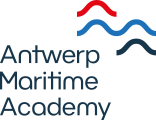

Case
Antwerp Maritime Academy

Human Factor at Sea: who leads when the best view is not held by the highest rank?
The question
In a crisis, the person who sees the problem first is often not the person with authority to act on it. What happens to that information?
The situation
Ships run on clear hierarchy, and they need to. A crisis tests it. The signal that matters is usually small, early and noticed by one person, while the decision sits with another. Maritime training teaches procedure and command well. This exercise looked at the gap between them: how a crew's understanding of a situation forms before anyone decides anything.
What gets lost
When capability is routed by rank, the organisation loses its earliest information. A slow trend, a sense that something is off, a concern that is hard to say upwards: each is a capability that existed and never reached the decision. In a ship's engine room the cost is a breakdown at sea. In other organisations it is the same mechanism with a different bill: a missed weak signal, a late correction, a decision made with the right people present and the wrong information. Weick and Sutcliffe (2007) describe the reverse as a core habit of high-reliability organisations: "deference to expertise," where authority moves to whoever knows most about the problem in front of them, whatever their rank.
Leadership can move.
Rank does not.
What we did
We ran a structured crisis scenario with students, using the OODA loop (Observe, Orient, Decide, Act) as the frame. TƎT added one question at each step: which kind of thinking helps here? The exercise concentrated on Observe and Orient, because that is where the team's understanding is formed.
Two Alarms, One Rumour
A generator bearing has run hotter over several watches. It has not crossed the alarm threshold, but the trend is moving away from baseline.
The Chief Engineer wants to reduce speed and inspect.
The Captain wants to continue. A weather window of 14 hours is closing.
Neither position is irrational.
Then an old, unconfirmed rumour about the Captain's conduct on another vessel enters the room. The team has to separate signal from interpretation, operational pressure from risk, and evidence from anxiety. There is no clean procedural answer. That is the point.
How the talents map to the loop
| Step | The question | Capability that helps | What it contributes |
|---|---|---|---|
| Observe | What is happening before we explain it? | Embodiment | Notices that something is wrong before it can be shown. |
| Deep Focus | Stays on the slow trend others pass over. | ||
| Integrative Thinking | Connects signals that look unrelated. | ||
| Orient | What might these observations mean? | Cognitive Dexterity | Keeps competing explanations open instead of closing early. |
| Strategic Empathy | Holds the Engineer's and the Captain's view without choosing one too soon. | ||
| Emotional Intelligence & Regulation | Stops anxiety, rank and rumour from bending the group's reading. | ||
| Adaptive Masking | Shows where a concern must be translated across rank, language or register to be heard at all. | ||
| Decide | What do we commit to, and what do we keep open? | Cognitive Dexterity | Weighs the options against each other and changes course when the evidence shifts. |
| Act | How do we carry it out together? | Emotional Intelligence & Regulation | Keeps the team steady under pressure while the decision is carried out. |
| Decide → Act | How do we move together? | Strategic Empathy emerging | Explains the decision in terms each stakeholder can act on. |
What we saw
1. The vocabulary made capability visible in other people, not just in yourself.
Students started naming what a colleague was contributing: "this needs someone to hold the question open," "we need to hear the other side before we say this to the crew."
A shared language moves a disagreement from the person to the task. People who feel safe to differ raise problems earlier (Edmondson, 1999).
Design reviews, board discussions, incident debriefs, any meeting where "you're overcomplicating this" ends the conversation.
2. Leadership moved. Rank did not.
The strongest discussion was about leadership as a position versus leadership as a function. Command stayed where it was. The lead on observation, on interpretation and on the decision could sit with different people.
Leadership is an activity anyone can do. Authority is a position (Heifetz, Grashow & Linsky, 2009). High-reliability organisations route decisions to expertise during an event (Weick & Sutcliffe, 2007).
Hospital teams, incident response, defence cells, trading floors, product launches that go wrong on a Friday.
3. Following well turned out to be a skill.
Students described a new move: recognising "someone else sees something I don't, and I should follow their reading for now."
Kelley (1992) separates passive and uncritical followers from the engaged, independently critical ones. The last group is what makes a leader's decision better rather than just faster. Follow does not mean stay quiet. It means support, with a live way to disagree.
Any hierarchical organisation: engineering, consulting, public administration, the military.
4. The loop does not ask for the same thinking at every step.
Observing rewarded some ways of working, orienting others, and acting on a decision asked for something different again.
Experienced decision-makers read a situation as a pattern first and choose options second (Klein, 1998). Boyd's OODA places most of the weight on orientation, which is where interpretation can go wrong (Osinga, 2007). If orientation is where teams fail, it is where the right capability matters most.
Strategy sprints, security operations, supply-chain disruption, any process with an explicit loop.
5. The moment between Decide and Act was a handover problem. emerging
This came from the classroom, not from the original exercise design.
Students noticed that a technically sound decision can fail when different stakeholders hear it differently. Strategic Empathy, used earlier to hold two views, came back here to carry the decision across them.
This is a hypothesis from one session. It fits the translation role described in boundary-spanning work (Obstfeld, 2005; Ancona & Caldwell, 1992). It needs more exercises before we state it as a finding.
Any decision that crosses functions: finance to operations, headquarters to sites, regulator to operator.
What had to be true
- The scenario was ambiguous on purpose. A clean answer would have hidden the problem.
- Rank stayed real. The exercise did not pretend hierarchy away.
- A common vocabulary existed before the discussion started.
- Raising a concern about a senior person was treated as part of the exercise, not as a breach.
- The facilitator held the line between "development exercise" and "assessment of students."
Limits
- One exercise, with students. Not a live crew, not a measured outcome.
- We observed what participants said and did. We did not measure decision quality.
- Observations come from the Lecturers' Observations.
- Every capability has a point where the situation outgrows it, for example when uncertainty stays open longer than a group can hold it. That is a feature of situations, not of types of people. This case does not map who struggles where.
Sources
Ancona, D. & Caldwell, D. (1992). Bridging the boundary. Administrative Science Quarterly, 37(4).
Edmondson, A. (1999). Psychological safety and learning behavior in work teams. Administrative Science Quarterly, 44(2).
Heifetz, R., Grashow, A. & Linsky, M. (2009). The Practice of Adaptive Leadership. Harvard Business Press.
Kelley, R. (1992). The Power of Followership. Doubleday.
Klein, G. (1998). Sources of Power. MIT Press.
Obstfeld, D. (2005). Social networks, the tertius iungens orientation, and involvement in innovation. Administrative Science Quarterly, 50(1).
Osinga, F. (2007). Science, Strategy and War: The Strategic Theory of John Boyd. Routledge.
Weick, K. & Sutcliffe, K. (2007). Managing the Unexpected (2nd ed.). Jossey-Bass.